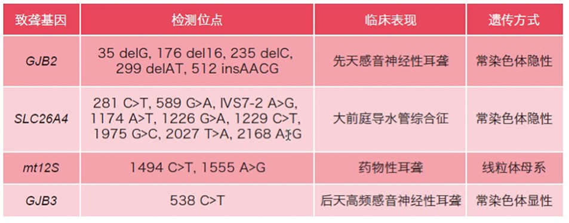
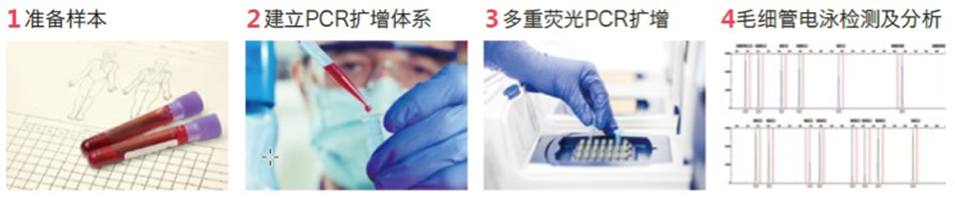

耳聋基因筛查
2006年第二次全国残疾人抽样调查结果显示，我国听力残疾者高达2780万，占残疾人总数的33%。尤其值得关注的是7岁以下的听力残疾儿童高达80万人，并以每年3万聋儿的速度增长。约 60 ％的耳聋属于遗传性耳聋，其中，以常染色体隐性的遗传方式最为常见，占遗传性耳聋的70％～80％。正常群体中携带耳聋基因的比例高达5-6%，因此耳聋发病率一直居高不下。耳聋基因筛查不仅能检测出耳聋基因的携带者，还能发现迟发性耳聋和药物性耳聋，为患者今后的生活提供指导。
产品特点
血液血卡直扩
免提取DNA，省时省力，减少污染机会
操作简便快捷
1管式扩增，全程只需3h，适于自动化、批量化检测
结果直观易读
免费提供专业软件辅助结果判读，快速简便
位点准确全面
包含4大中国人群常见的致聋基因，共17个位点
UNG防污染体系
有效避免PCR产物污染
适应领域
新生儿耳聋基因筛查
耳聋患者病因排查、遗传咨询和婚育指导
有耳聋家族史的听力正常人群的用药指导、生活注意事项和婚育指导
胎儿耳聋基因产前检测
预测人工耳蜗植入的疗效
检测平台
多重荧光PCR扩增和毛细管电泳检测
本试剂盒通过荧光标记的等位基因特异性PCR扩增，结合毛细管电泳的方法，对遗传性耳聋基因(GJB2、SLC26A4、GJB3)和药物性耳聋基因(mt12S)进行分型检测，并提供专业软件进行结果分析。
检测位点

检测流程

检测结果
样本类型
EDTA/枸橼酸钠抗凝血、保存于血卡的血斑、基因组DNA、羊水、绒毛膜
适用仪器
1. PCR仪
2. 基因分析仪(ABI PRISM® 310、3100 Genetic Analyzer或ABI 3130 Series、3500 Series、3730 Series Genetic Analyzer)
参考文献
1. Zhang J, et al. Int J Pediatr Otorhinolaryngol. 2013 Dec;77 (12):1929-35.
2. Ji YB, et al. Acta Otolaryngol. 2011 Feb;131(2):124-9.
※本资料仅供相关医学专业人士参考使用，试剂盒使用或注意事项详见说明书。
1. Zhang J, et al. Int J Pediatr Otorhinolaryngol. 2013 Dec;77 (12):1929-35.
2. Ji YB, et al. Acta Otolaryngol. 2011 Feb;131(2):124-9.
※本资料仅供相关医学专业人士参考使用，试剂盒使用或注意事项详见说明书。